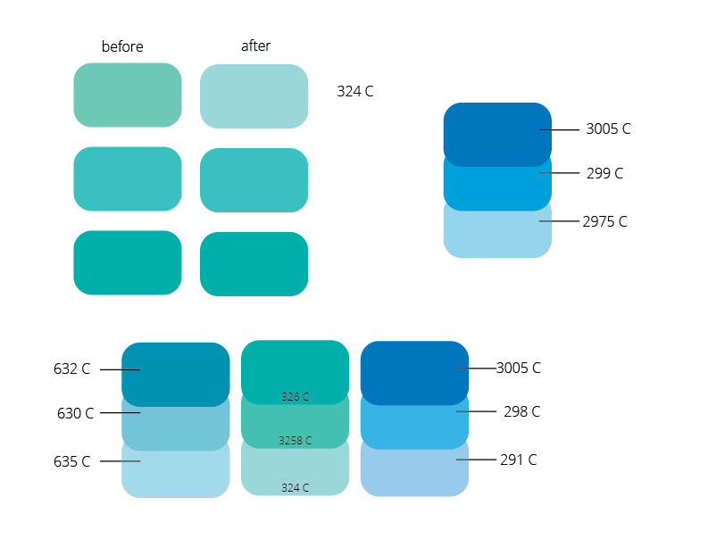
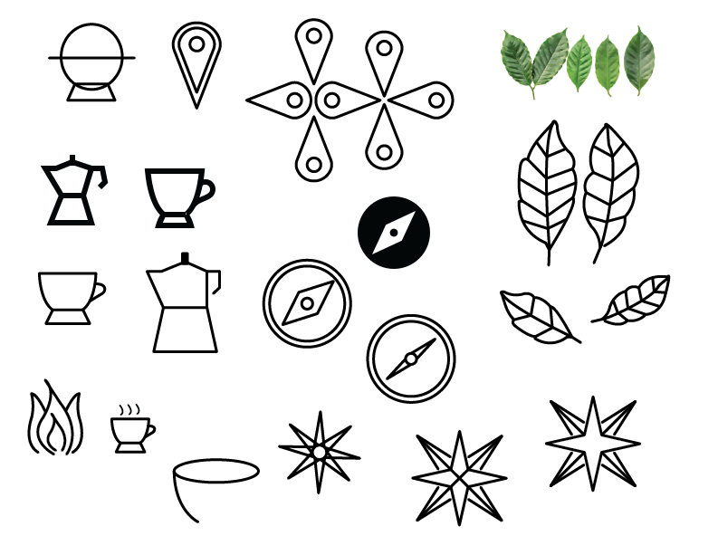
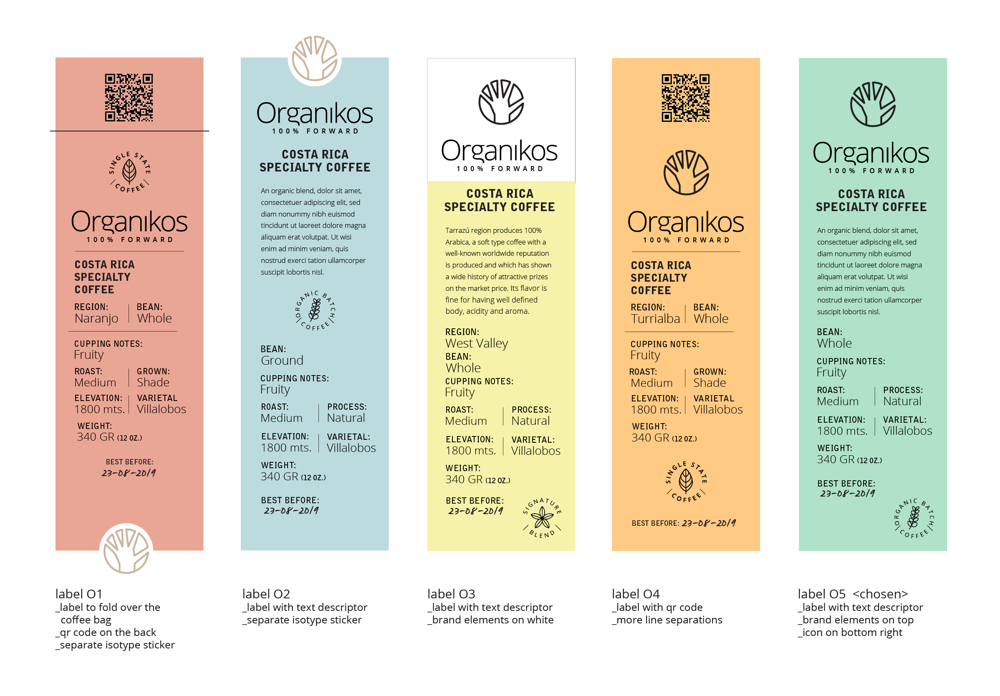
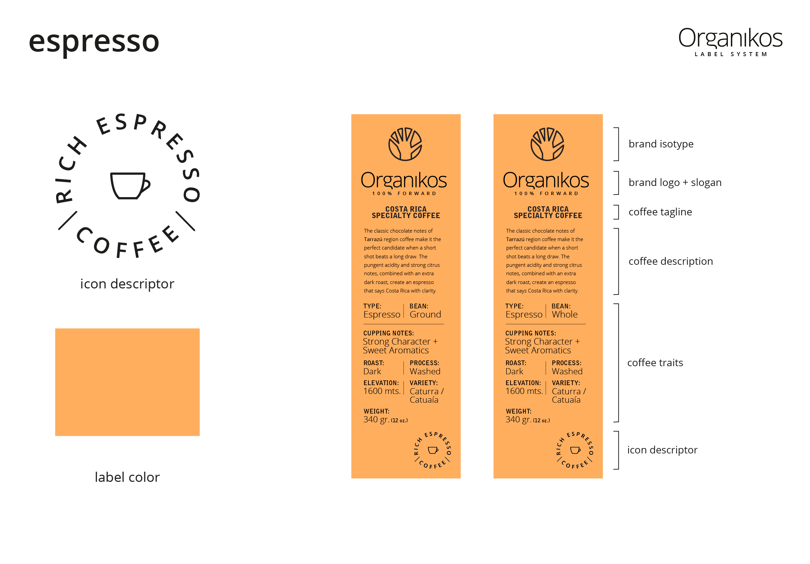
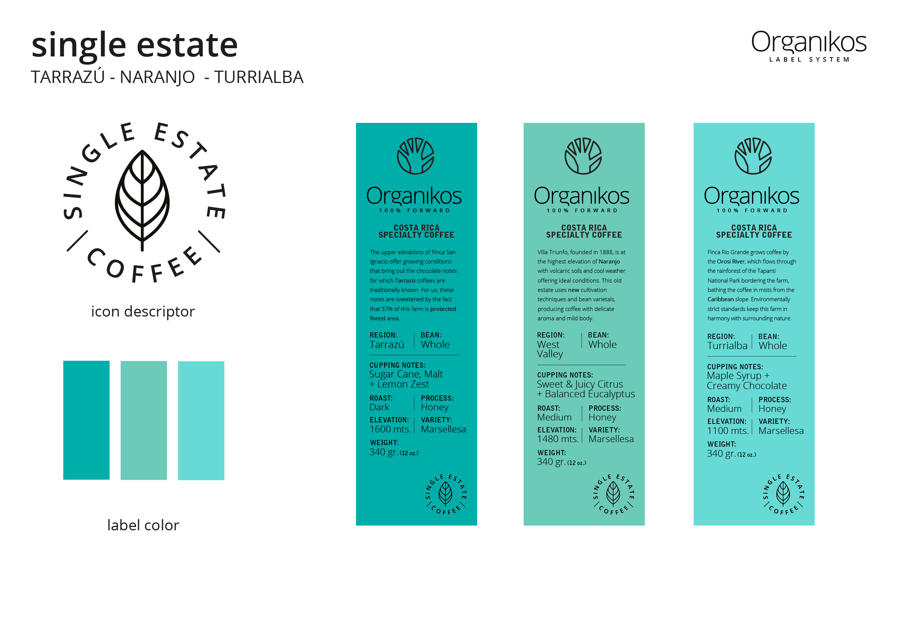
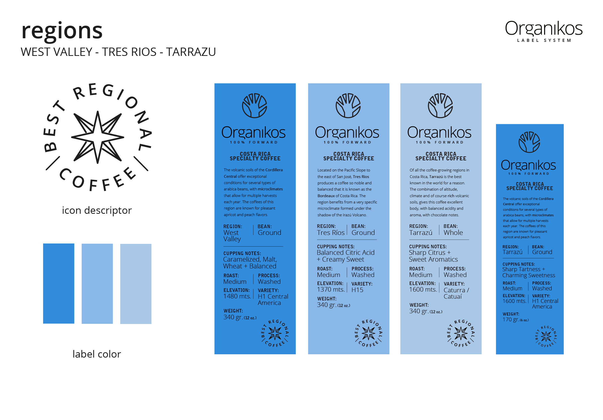

Organikos is a coffee specialty brand that launched in 2019 with hopes to introduce sustainably grown coffee from small scale Costa Rican farmers to consumers in North America and Europe. The brand’s identity was designed by fellow co-worker Roberto Leitón.My role was to translate the initial designs to practical and readable labels for the coffee bags and possible merchandise.
     Each of their coffees has a unique profile, whether it's a lemon + orange decaf or their specialty house blend from Costa Rica's Central Valley. It was pertinent for the labels to reflect the variety of coffees while still maintaning an uniform look. After several rounds of colour picking, seeking for the perfect layout and multiple feedback meetings with the clients; the final label system was created. The system consists on having all the brand elements on the top, while having all the coffee traits and descriptors in the bottom half. Each coffee is differentiated by it’s label colour and an iconic badge descriptor in the bottom right corner.